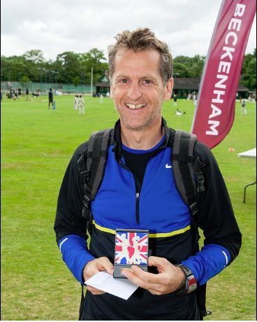

Chris Desmond led the four SAC runners home who contested the Kent Grand Prix 10k race at Beckenham on 23rd June, winning the prize for first M50 in the process.

Chris is also our highest placed runner in the Kent GP, in tenth place after this sixth race of the series. The men lie eighth and the women, led by Sally Shewell in eleventh, are thirteenth in the GP. The current spreadsheet is here.
The SAC results from the Beckenham 10k were as follows:
| Place | Time | Name | Number | Club | Category |
| 21 | 0:39:12 | Chris Desmond | 172 | Sevenoaks AC | MV50 |
| 48 | 0:42:11 | Daniel Witt | 192 | Sevenoaks AC | MS |
| 53 | 0:42:34 | Stuart Thompson | 233 | Sevenoaks AC | MS |
| 164 | 0:49:58 | Rob Johnson | 236 | Sevenoaks AC | MS |
Full results are here.
The small turnout at Beckenham was explained by a healthy SAC presence at the North Downs 30k Run on the same morning. Eleven Sevenoaks runners opted for the longer, off-road race, where Jim Fitzmaurice was first M70, as follows:
| Pos | Gun | Name | Team / Club | Sex | Age | Chip | Chip | Pos by |
| Time | Group | Num | Time | Chip Time | ||||
| 34 | 02:25:32 | Gabriel MORRIS | SEVENOAKS AC | M | Senior | 461 | 02:25:24 | 34 |
| 48 | 02:30:17 | Andrew ASHLEE | SEVENOAKS AC | M | v40 | 375 | 02:29:56 | 48 |
| 134 | 02:50:35 | Andy RACKHAM | SEVENOAKS AC | M | v40 | 254 | 02:50:08 | 133 |
| 138 | 02:51:40 | Erik FOLKESSON | SEVENOAKS AC | M | v50 | 415 | 02:51:12 | 138 |
| 209 | 03:04:21 | Manuel FIELD | SEVENOAKS AC | M | Senior | 78 | 03:03:54 | 208 |
| 228 | 03:08:01 | James FITZMAURICE | SEVENOAKS AC | M | v70 | 472 | 03:07:54 | 228 |
| 239 | 03:10:13 | Sarah SHEWELL | SEVENOAKS AC | Fem | v45 | 199 | 03:10:08 | 240 |
| 380 | 03:38:22 | Ursula FIELD-WERNERS | SEVENOAKS AC | Fem | v45 | 77 | 03:37:50 | 380 |
| 408 | 03:48:52 | Olivia POCOCK | SEVENOAKS AC | Fem | Senior | 516 | 03:48:20 | 408 |
| 413 | 03:53:14 | Maria ASHLEIGH | SEVENOAKS AC | Fem | v35 | 368 | 03:52:41 | 412 |
| 430 | 04:00:49 | Sylvia LEWIS | SEVENOAKS AC | Fem | v55 | 27 | 04:00:17 | 430 |
Full results here.